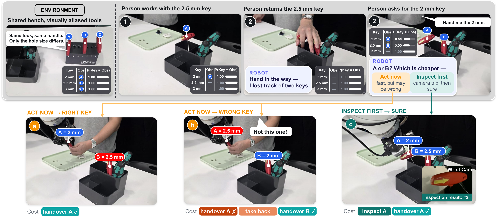
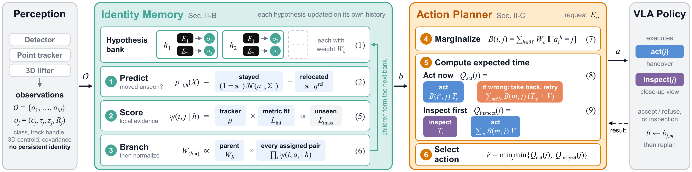
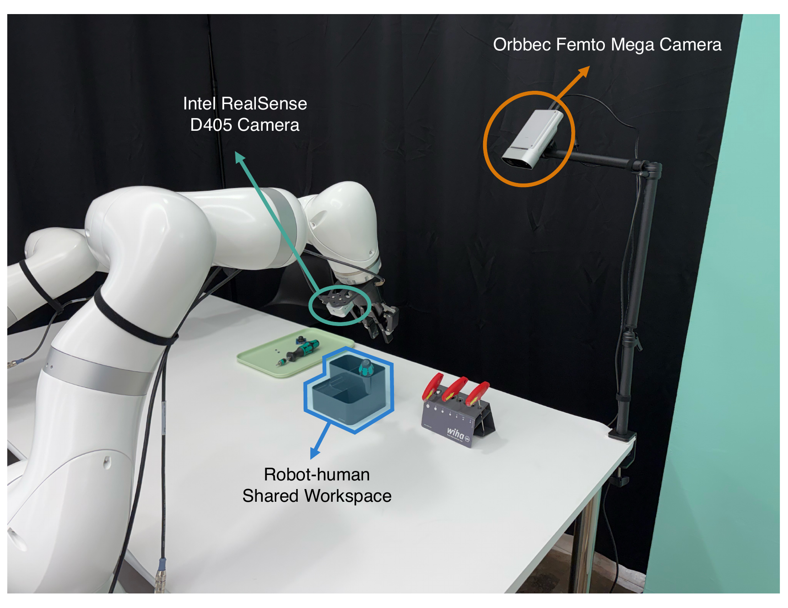
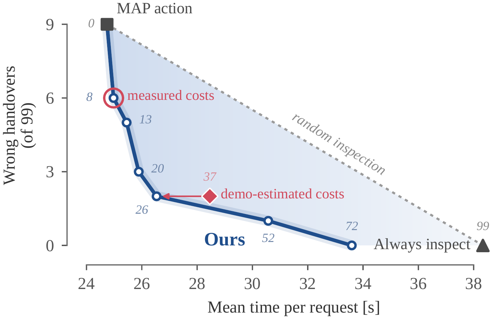
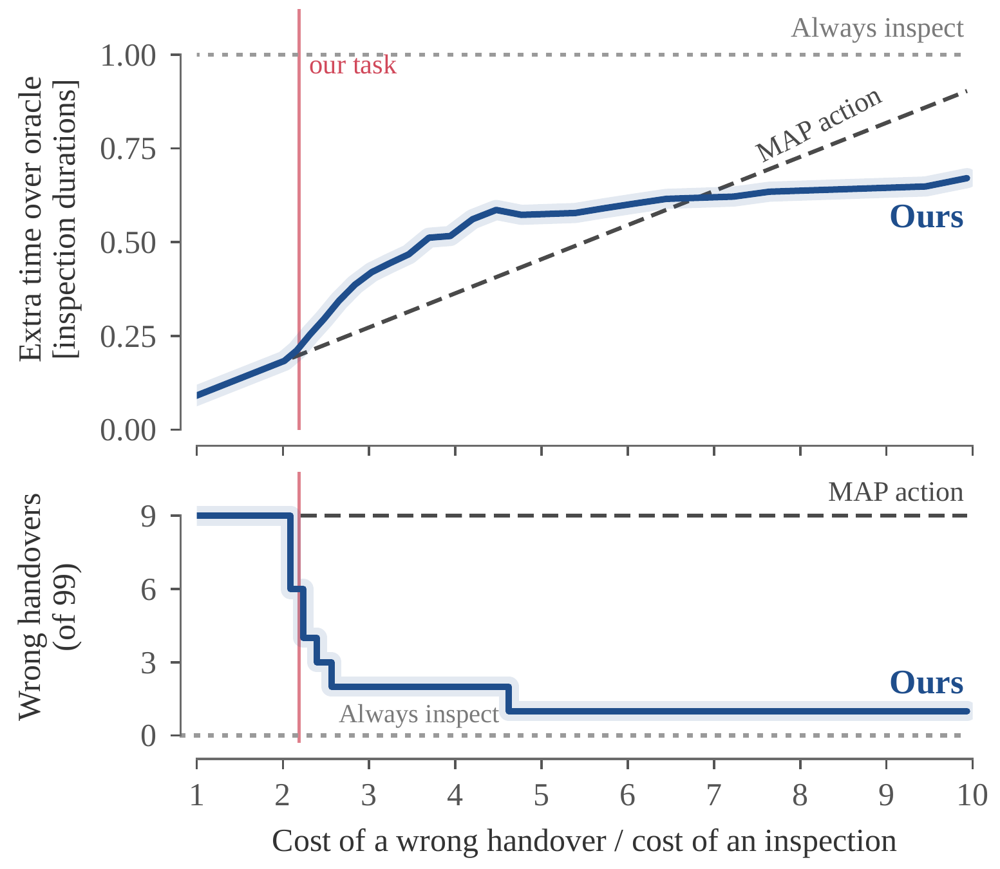
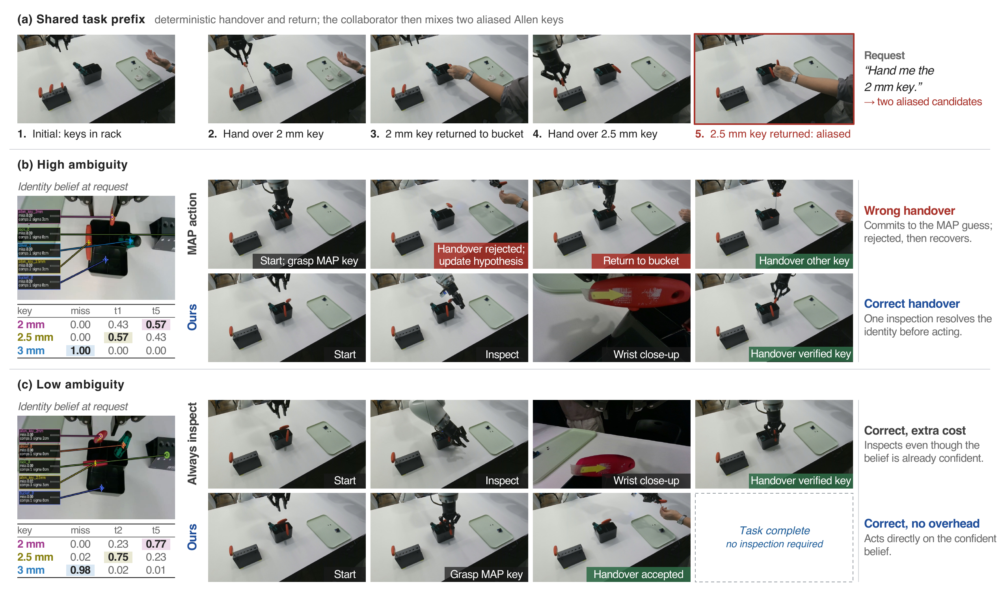

Robots that share tools with people must preserve object identity across occlusions and unobserved human manipulation, even when multiple instances are visually aliased. We present a persistent identity belief that maintains competing joint entity–observation hypotheses instead of collapsing to a single assignment, augments them with relocation uncertainty after human interaction, and exposes probabilistic identity marginals to a belief-aware planner. The planner chooses between acting on the current belief and inspecting a candidate when the expected cost of disambiguation is lower than the risk of a wrong handover.
We evaluate the critical human-intervention event from a closed-loop Allen-key handover task over 99 replayed real episodes. Joint hypotheses and relocation modeling substantially reduce confidently wrong beliefs, while belief-aware planning reduces wrong handovers relative to maximum a posteriori (MAP) action and avoids the fixed overhead of always inspecting.

Persistent identity can become ambiguous when perceptually aliased tools get relocated while they are unobserved or occluded. The robot maintains competing identity beliefs and chooses whether to act or inspect based on downstream cost.
Collaborative robots hand tools to people, take them back, and reuse them later. This implicitly assumes the robot knows which physical tool is which. That assumption breaks when two conditions coincide: tools are visually aliased (e.g., Allen keys that differ only in size), and a collaborator relocates them while unobserved. Perception can recover where the visible candidates are, but not which tool each one is.
Existing visuomotor memories and 3D scene graphs commit to a single target, so an unobserved swap produces a confidently wrong handover. Such an error not only takes time to recover from, but also forces the collaborator to divert attention from their own task, and lowers the trust people place in the robot. Inspecting every candidate, on the other hand, adds motion and latency to every request. Our approach is a memory that remembers what it does not know, paired with a planner that inspects only when it is worth it.

System overview. Anonymous per-frame observations update a persistent identity belief, from which the planner chooses to act or inspect; a VLA policy executes the choice.
Rather than committing to one association, the memory keeps a weighted bank $\mathcal{H}$ of mutually consistent joint hypotheses. Each hypothesis binds every persistent entity $E_i$ to a current anonymous observation $o_j$ (or to “unobserved”) and carries a 3D Gaussian position and a relocation probability $\pi_{i,h}$:
$$h=\Big(\mathbf{a}^h,\{\mu_{i,h},\Sigma_{i,h},\pi_{i,h}\}_{i=1}^{K}\Big).$$When a tool class is manipulated out of view, tracking is suspended. On resume, the predictive density mixes “still near the remembered pose” with “moved elsewhere”:
$$p_{i,h}^-(X) = (1-\pi_{i,h}^-)\,\mathcal{N}(X; \mu_{i,h}^-, \Sigma_{i,h}^-) + \pi_{i,h}^-\, q_{i,h}^{\mathrm{rel}}(X).$$Each parent hypothesis branches over valid one-to-one, class-consistent assignments, scored by visibility-aware hit/miss likelihoods and a tracker continuation prior, then globally normalized. Both explanations survive until evidence resolves them.
The planner reads the marginal identity belief $B(i,j)=\sum_{h\in\mathcal{H}}W_h\,\mathbb{I}[a_i^h=j]$ and compares acting and inspecting in units of execution time:
$$\begin{aligned} Q_{\mathrm{act}}(j)&=B(i^*,j)\,T_s(j,e)+\sum_{m\ne i^*}B(m,j)\big[T_w(j,e)+V(b_{j,m},e_{\mathrm{return}})\big],\\ Q_{\mathrm{inspect}}(j)&=T_i(j,e)+\sum_m B(m,j)\,V(b_{j,m},e_{\mathrm{inspect}}). \end{aligned}$$Inspection is therefore triggered by the expected downstream cost of a mistake, not by a fixed confidence threshold. Because hypotheses are joint, conditioning on one candidate's identity also updates the others.

KUKA LBR Med 14 R820 with a Robotiq 2F-85 gripper. The wrist-mounted RealSense D405 is the only sensor used by the memory and planner; the external Orbbec Femto Mega feeds VP-VLA only.
We evaluate the identity-ambiguity event of the handover task. An original Allen key is observed in a shared bucket; while the wrist camera looks elsewhere, the collaborator returns a visually similar key and may displace the original (0.1–8.7 cm, median 4.0 cm). The robot must then identify the original. We repeat this for 100 real episodes (99 with a valid decision record).
Recorded frames and robot poses are replayed through every memory variant, so all variants receive identical sensory evidence. Policy outcomes are computed against the annotated identity: a wrong candidate is refused and identified by the collaborator, while an inspection reveals the candidate's identity. Each primitive cost is grounded in real VLA rollouts.
| Primitive duration | Measured (10 rollouts) | Planner forecast |
|---|---|---|
| Successful handover | 21.37 s | 20.82 s |
| Inspection (additional) | 16.96 s | 11.24 s |
| Refusal / recovery | 15.73 s | 14.53 s |
The deployed planner decides with a forecast calibrated from VLA training demonstrations; all policies are scored with measured durations. The forecast underestimates inspection by ~6 s.
| Memory | MAP ↑ | NLL ↓ | Brier ↓ | CW ↓ | Time [s] ↓ | Wrong ↓ | Inspect ↓ | |
|---|---|---|---|---|---|---|---|---|
| Full (ours) | 0.91 | 0.33 | 0.10 | 1 | 28.46 | 2 | 37 | |
| Hypotheses | Single hypothesis | 0.82 | 1.26 | 0.18 | 18 | 28.12 | 18 | 0 |
| Relocation | w/o relocation | 0.91 | 0.63 | 0.09 | 9 | 24.74 | 9 | 0 |
| Always relocated | 0.91 | 0.45 | 0.13 | 0 | 30.48 | 1 | 51 | |
| Uniform relocation only | 0.79 | 0.42 | 0.14 | 2 | 30.34 | 2 | 48 | |
| Evidence | w/o negative spatial update | 0.68 | 0.87 | 0.25 | 17 | 33.17 | 26 | 12 |
| w/o observation hold† | 0.59 | 0.85 | 0.27 | 6 | 35.32 | 28 | 21 |
CW: confidently wrong trials (incorrect MAP identity with confidence ≥ 0.9). Time / Wrong / Inspect are the downstream behavior of the same expected-cost planner on each memory. †Without observation hold, all 100 episodes yield a valid decision; other rows use the common 99-episode subset.
Top-1 accuracy alone is insufficient for a planning-facing memory: the full model and the no-relocation variant have identical MAP accuracy, yet very different confident-error counts and downstream behavior.
| Ours | MAP action | Always inspect | ||||||
|---|---|---|---|---|---|---|---|---|
| Displacement | $n$ | Time [s] | Wrong | Inspect | Time [s] | Wrong | Time [s] | Inspect |
| All | 99 | 28.46±0.93 | 2 | 37 | 24.74±1.08 | 9 | 38.33±0.00 | 99 |
| < 1 cm | 10 | 21.37 | 0 | 0 | 21.37 | 0 | 38.33 | 10 |
| 1–3 cm | 18 | 21.37 | 0 | 0 | 21.37 | 0 | 38.33 | 18 |
| 3–5 cm | 40 | 27.31 | 0 | 14 | 21.37 | 0 | 38.33 | 40 |
| 5–9 cm | 31 | 36.35 | 2 | 23 | 32.14 | 9 | 38.33 | 31 |
Policies acting on the full memory. Times are mean ± SEM across episodes, computed from measured primitive durations.
MAP action is 3.7 s faster on average, since its candidate is already correct in 91% of trials. The planner's benefit is instead the ability to trade inspection cost against wrong handovers, whose cost to the collaborator execution time does not capture. It does not inspect whenever uncertainty exists; it concentrates verification where the belief and the task cost make a wrong commitment consequential.

Time–error trade-off. Each point is the planner deciding with different costs, scored with measured costs. Circle / diamond: deciding with measured / forecast costs. Dotted: random mix of MAP action and always-inspect. Numbers: inspections out of 99.

Cost-ratio sweep. Same costs for deciding and scoring; the ratio is varied through the inspection duration. Top: extra time per request over the oracle, in units of one inspection. Bottom: wrong handovers. The vertical line marks the measured costs of our task.

(a) Shared task prefix: the robot hands over the 2 mm and 2.5 mm Allen keys, which the collaborator returns to the bucket so that two visually aliased candidates remain when the 2 mm key is requested again. (b) High-ambiguity case: MAP action commits to the wrong candidate and requires refusal and recovery, whereas our planner first performs a wrist-camera close-up inspection and then hands over the verified key. (c) Low-ambiguity case: always-inspect incurs an unnecessary verification motion, while our planner acts directly on the confident identity belief.
The replay benchmark isolates the same post-intervention ambiguity that occurs in the full interaction. Executing the complete sequence end to end shows that the identity posterior changes the executed manipulation strategy, rather than serving only as an offline association score.
Rather than forcing memory to resolve ambiguity into a single identity estimate, our framework exposes persistent identity uncertainty as a planning-facing state, allowing downstream decision making to determine when uncertainty is tolerable and when additional perception is worth its cost. Real-robot replay experiments show that joint hypotheses and relocation modeling reduce overconfident identity errors and enable this act-or-inspect trade-off, supporting uncertainty-aware persistent world models as an interface between perception, memory, and task-level planning.
@misc{murphy2026remembering,
author = {Murphy, Brendon T. and Koh, Keonyoung and Seo, Woobean and Kwak, Hoseong and Ha, Chunghun and Ro, Duhyun},
title = {Remembering What You Don't Know: Planning with Persistent Identity Beliefs under Perceptual Aliasing},
year = {2026},
}